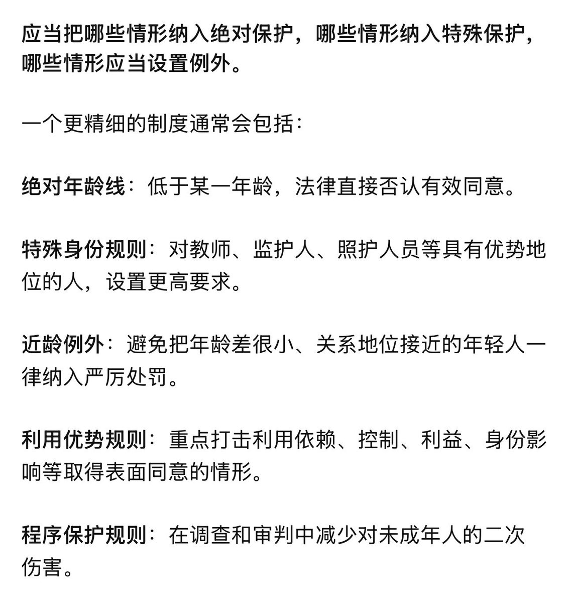

塩ビ_🧊
@shio_vinyl
关于一刀切政策，可以看看类似的未成年人网游和社媒政策的效果😶🌫️

塩ビ_🧊
@shio_vinyl
我感觉现在舆论就和疯子一样，大概是因为发泄情绪并不需要对现实负责…
16周岁我觉得是最合理的，再往上我觉得意义就不大了，关键性的保护措施还是得针对特殊关系的量化规范（例如师生、亲属无年龄限制，甚至可以加入更严格的行为判断；近龄关系就可以适当宽松）
关键还是性教育水平和特殊保护🫠 https://t.co/nqeyzuU0Wk